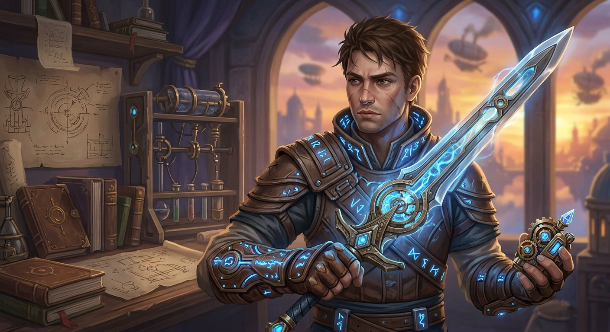
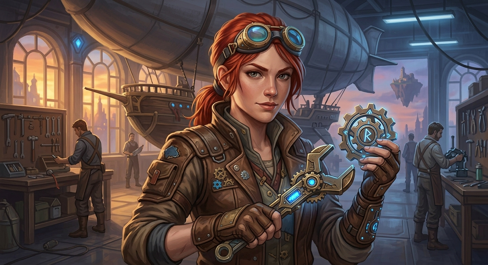
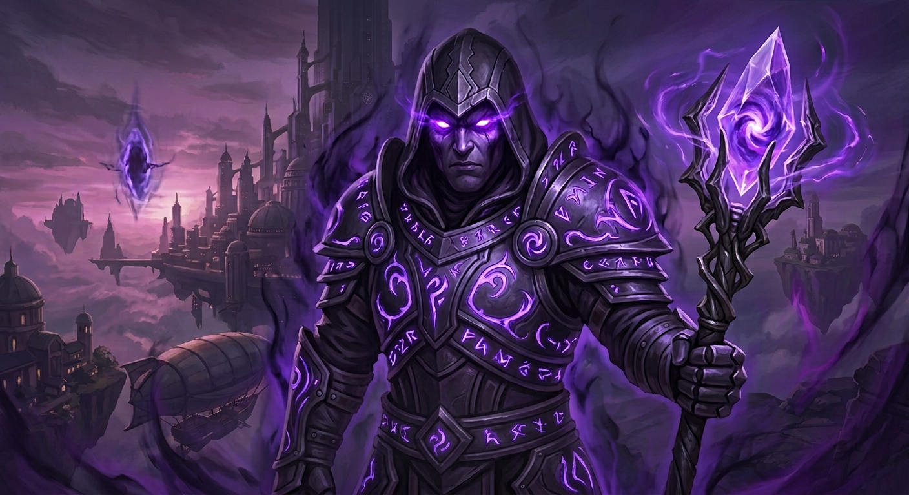

Kael Vane
Ruolo: Protagonista / Crono-Mago
Un giovane inventore in grado di manipolare i flussi del tempo. Alla ricerca di risposte sul suo passato, Kael si trova coinvolto in un conflitto millenario.
Scopri gli eroi, i rivali e gli alleati che incontrerai lungo il tuo viaggio nel tempo.

Ruolo: Protagonista / Crono-Mago
Un giovane inventore in grado di manipolare i flussi del tempo. Alla ricerca di risposte sul suo passato, Kael si trova coinvolto in un conflitto millenario.

Ruolo: Alleata / Ingegnere di Bordo
Genio della tecnologia aerea, Lyra è responsabile della manutenzione del dirigibile che trasporta il gruppo tra le diverse epoche storiche.

Ruolo: Antagonista Principale
Un'entità immortale che intende riavvolgere il tempo fino all'origine del cosmo, cancellando l'esistenza di tutte le civiltà attuali.